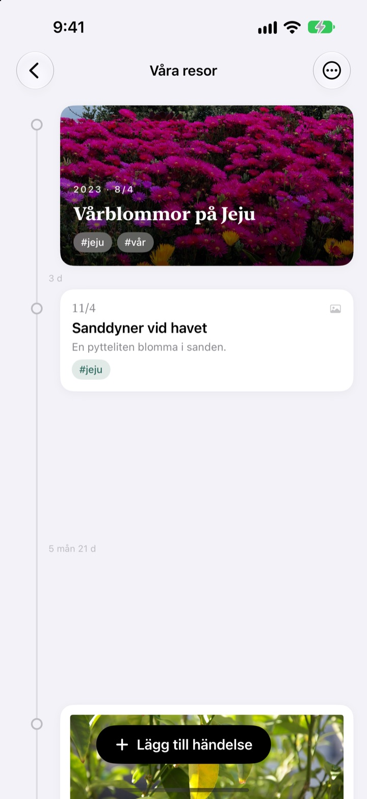
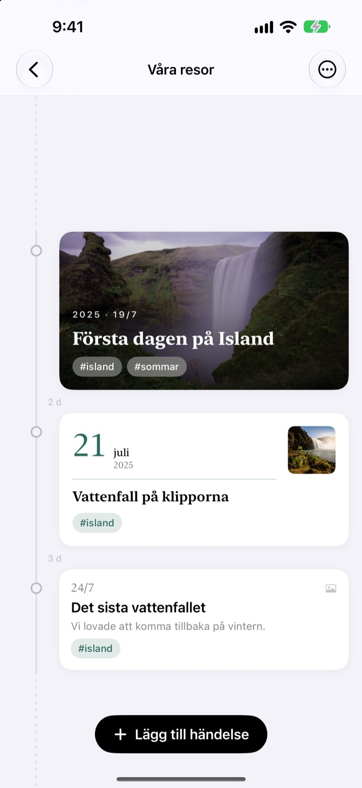
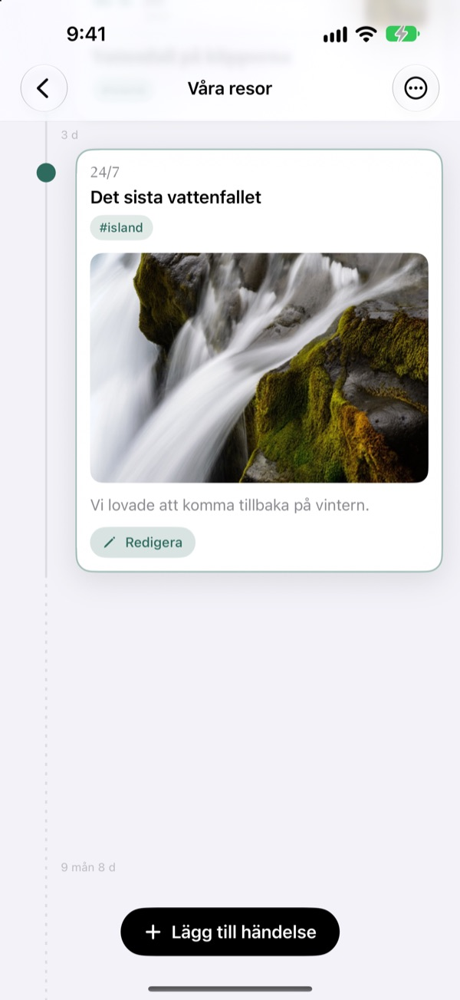
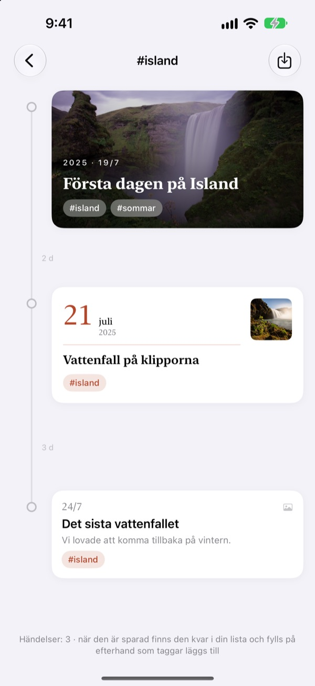
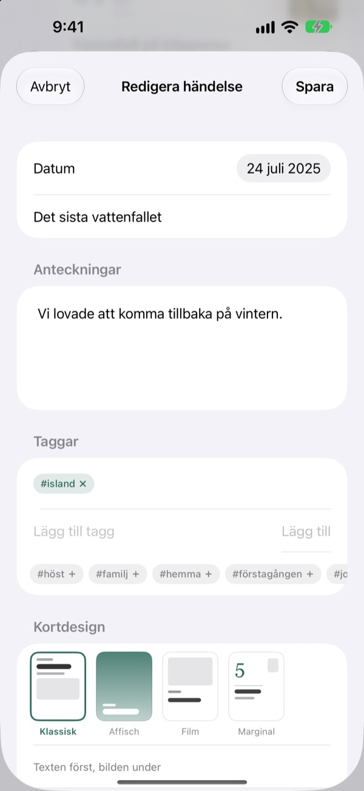

En tidslinje
som sträcker ut sig med tiden
Tre dagar och fem dagar står i förhållandet 3:5. Ett långt uppehåll som två år och fyra månader viks ihop till en streckad linje. Bara genom att titta på avstånden ser du hur tiden gick.
Alla funktioner är gratis. För iPhone och iPad.

Dra ut avstånden själv
Varje knapp lägger till en ny händelse efter den sista. Avstånden följer samma regel som i appen.
Bildbiblioteket visar inte tiden
Bildbiblioteket ställer upp allt efter datum, men tre dagar och två år tar samma enda steg. Yeoul placerar händelser lika långt ifrån varandra som tiden mellan dem, så du ser direkt när det hände mycket och när det var lugnt.
Avståndet är tiden
Hela tidslinjen har en enda skala: Samma period är lika lång var som helst på skärmen. Vid varje avstånd står den verkliga längden, till exempel 3 d eller 5 mån 21 d.
Händelser som ligger väldigt tätt får ändå lite luft, och väldigt långa uppehåll viks ihop till en streckad linje.

Den hittar bilderna från den dagen
Välj datum och tryck på Hitta relaterade bilder för att se vad du fotade den dagen. Inget som passar? Med Hitta själv väljer du själv.
Tryck på en händelse i tidslinjen så vecklas bild och text ut precis där.

En tagg samlar utspridda stunder
Ge händelser en tagg som #Island, tryck på den, och alla händelser med den taggen från alla dina tidslinjer samlas i en ny.
Spara den så stannar den i listan och tar själv in nya händelser med samma tagg.

Rätt kort för varje stund
Klassisk sätter texten först, Affisch fyller kortet med bilden, Film ramar in den som en papperskopia och Marginal låter ett stort datum ta plats. Förhandsvisningen ändras direkt.

Kom igång i tre steg
- 1
Skapa en tidslinje
Barnets första år, ett förhållande, en resa: var och en med eget namn och egen färg.
- 2
Lägg till händelser
Skriv datum och titel och lägg till en bild från den dagen.
- 3
Tagga dem
Händelser med samma tagg samlas, även från olika tidslinjer.
Fyra kortdesigner
- Klassisk
- Texten först, bilden under.
- Affisch
- Bilden fyller hela kortet med en stor titel ovanpå. Utan bild används tidslinjens färg.
- Film
- En bild med kant som en papperskopia, skrivmaskinstext och datumstämpel.
- Marginal
- En stor datumsiffra och en liten bild. Här är det orden som spelar huvudrollen.
En ny händelse börjar med samma design som det senaste kortet i tidslinjen.
Alla funktioner är gratis
Gratis
- Så många tidslinjer du vill, med namn och färg
- Bilder, berättelser och taggar på varje händelse
- Hitta bilder från händelsens dag
- Sparade taggtidslinjer
- Fyra kortdesigner
- iCloud-synk mellan iPhone och iPad
- Logga med Genvägar och Siri
Stöd utvecklaren
- Välj en liten, mellan eller stor dricks
- Den låser inte upp något. Det är bara ett sätt att säga tack
Du hittar det i appens inställningar, när du vill.
Ingen reklam, ingen prenumeration.
Vanliga frågor
Varför är avstånden mellan händelserna så olika?
Yeoul placerar händelser lika långt ifrån varandra som tiden som faktiskt gick. Alla avstånd har samma skala, så tre dagar och fem dagar står i förhållandet 3:5. Händelser som ligger väldigt tätt får ett minsta avstånd så att de inte överlappar, och väldigt långa uppehåll viks ihop till en streckad linje med den verkliga längden, till exempel 2 år 4 mån.
Jag ser inte bilderna från den dagen.
Sökning efter datum kräver åtkomst till dina bilder. Tillåt det under Inställningar > Yeoul > Bilder. Yeoul letar efter bilder tagna från midnatt till midnatt den dagen, i enhetens tidszon. Vill du inte ge åtkomst trycker du på Hitta själv precis nedanför.
Vad är en taggtidslinje?
Tryck på en händelses tagg så samlar Yeoul alla händelser med den taggen från alla dina tidslinjer i en enda. De du ofta tittar på kan du spara i listan. Inget kopieras: Ändrar du den ursprungliga händelsen syns det här också, och raderar du taggtidslinjen finns händelserna kvar.
Varför kan jag inte lägga till händelser i en taggtidslinje?
En taggtidslinje är en vy som samlas efter tagg, inte en plats där händelser sparas, så det går inte att avgöra vilken tidslinje en ny händelse hör till. Lägg till den i sin egen tidslinje med taggen så dyker den upp här av sig själv.
Kan jag logga något utan att öppna appen?
Ja. Använd Logga en händelse i appen Genvägar eller med Siri och välj bara tidslinje och titel. Utan datum används den aktuella tiden.
Ser jag mina tidslinjer på andra enheter?
Ja, på alla iPhone och iPad som är inloggade på iCloud med samma Apple-konto. Kontrollera under Inställningar > ditt namn > iCloud att iCloud är på. Beroende på anslutningen kan det ta en stund.
Hur raderar jag mina uppgifter?
Svep en tidslinje åt vänster i listan eller tryck på Redigera. När en tidslinje raderas raderas också dess händelser. Det som finns kvar i iCloud tar du bort under hantering av lagringsutrymme i iCloud-inställningarna.
Ser utvecklaren mina uppgifter?
Nej. Dina händelser och bilder finns bara på dina enheter och i din egen iCloud, och utvecklaren kan inte se dem. Detaljerna finns i integritetspolicyn nedan.
Hur rapporterar jag ett fel eller föreslår något?
Direkt från inställningarna i appen, via mejl eller på Instagram via @lee25_ios. Skriv gärna enhetsmodell, iOS-version och vad som hände, så kan vi hjälpa till snabbare.
Frågor eller idéer? Skriv till leeo@kakao.com.